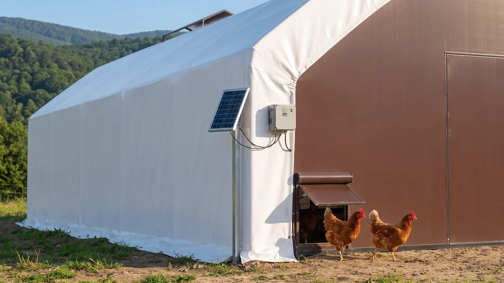
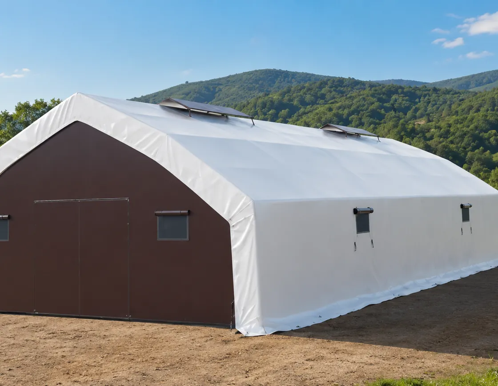

Kümes otomasyonu: otomatik kapı, yemleme ve iklim
En pahalı girdi tavuk değil, senin emeğin. 100'de gerekmeyen otomasyon 1.000'de nefes aldırır, 2.000'de şart olur. Hangi sistem hangi ölçekte parasını çıkarır, sahadan sırayla anlatıyorum.

Sabah 6'da kalkıp kapıyı açacaksın, sulukları dolduracaksın, yemi serpeceksin, akşam hava kararmadan yetişip kapıyı kapatacaksın. 30 tavukla bunu keyifle yaparsın. 300 tavukla dişini sıkarsın. 1.000 tavukta ise bir sabah geç kalkarsın, bir akşam düğüne gidersin, bir hafta hastalanırsın; işte o gün otomasyonun neden "lüks" değil, "can simidi" olduğunu anlarsın. Çünkü tavukçulukta en çok tükettiğin şey yem değil, kendi zamanın ve dizin.
Otomasyon dediğim uzay teknolojisi değil. Zamanlayıcıya bağlı bir kapı motoru, çatıdaki depodan gelen bir su hattı, silodan borularla akan yem, termostata bakan bir fan. Hepsi tek tek ucuz, işi basit. Marifet, hangisini hangi ölçekte kuracağını bilmekte. Herkese her şeyi almak da para yakar. Gel, kumeste neyin gerçekten işe yaradığını, neyin gösterişten ibaret olduğunu ayıralım.
Emek en pahalı girdi: otomasyon aslında ne satın alır?
Küçük üretici otomasyona bakınca kafasında hep "kaç para tutar" sorusu döner. Yanlış soru. Doğru soru şu: bu iş bana günde kaç dakika, kim hasta olunca kaç günlük kriz kazandırıyor? 1.000 tavuklu bir kümeste su taşımak, yem serpmek, kapı açıp kapamak, folluk toplamak günde rahat 2-2,5 saat tutar. Bunu 365'le çarp; yılda 800 saatin üstünde emek eder. O saatlerin karşılığını bir kez hesaplarsan, otomasyonun aslında ekipman değil özgürlük sattığını görürsün.
İkinci mesele süreklilik. Elle sulanan bir sürüde sen bir gün gecikince tavuk susuz kalır, sıcakta yumurtayı keser. Otomatik hatta su hep vardır. Yani otomasyon sadece zaman değil, verim istikrarı da satar. Köye dönüp bu işe girenlerin en çok tökezlediği yer de burası; büyüklüğü kaldıracak sistemi kurmadan sürüyü büyütüp altında ezilirler. O tuzakları köye dönüp tavukçuluğa başlayanların battığı noktalar yazısında tek tek yazdım.
Otomatik kümes kapısı: yırtıcıya karşı ilk hattın
Otomasyona nereden başlanır diye sorarsan, cevabım nettir: otomatik pop-hole kapısından. Pop-hole, tavukların gezinti alanına çıktığı o küçük kapıdır. Elle açılıp kapanır, ama bu kapının bir akşam açık kalması demek, sabaha sansarın sürüye girmesi demektir. Bir gecede 20-30 tavuğu kaybeden çok üretici tanıdım; hepsinin hikâyesi "o akşam kapatmayı unuttum" diye başlar.
Otomatik kapı iki türlü çalışır: ışık sensörlü ya da saat/zamanlayıcılı. Işık sensörlü olan hava karardıkça kapanır, ağarınca açılır; doğaya en uygunu budur çünkü tavuk zaten gün batımında içeri girer. Zamanlayıcılı olan ise senin kurduğun saatte iner. En iyisi ikisini birleştiren, yani karanlığı görüp ama en geç şu saatte kapanacak diye ayarlanabilen modeldir. Sansar, tilki ve yılan hava kararınca iş başı yapar; kapı onlardan önce inmeli. Bu koruma zincirinin diğer halkalarını tilki, sansar ve yılana karşı kümes güvenliği yazısında ayrıntısıyla anlattım, kapı tek başına yetmez.
Nipel su hattı: susuz tavuk yumurtayı keser
Elle taşınan suluk, kümesteki en sinsi verim katilidir. Yazın bir öğle sonrası suluk boşalır, sen fark etmezsin, tavuk 3-4 saat susuz kalır; ertesi gün follukta 15-20 yumurta eksik bulursun. Tavuk sudan kısılınca yemden de kısar, yumurta anında düşer. Üstelik açık suluk çabuk kirlenir, içine altlık ve gübre kaçar, hastalık taşır.
Çözüm nipel (damlalıklı) su hattı. Çatıya ya da yüksek bir yere konan depodan borularla gelen su, tavuğun gagalayınca damlattığı nipellerle akar. Su hep temiz, hep taze, hep var. Basınç düşürücü regülatörle sistem kendini ayarlar. Kaç tavuğa kaç nipel, deponun ne kadar yüksek olması gerektiği gibi hesapları ve suluk tiplerinin karşılaştırmasını tavuklar günde ne kadar su içer ve suluk sistemi yazısında verdim; su, otomasyonda kapıdan hemen sonra gelen ikinci önceliktir. Neden? Çünkü bir tavuk yemsiz birkaç gün dayanır ama susuz bir günde çöker.
Otomatik yemleme ve silo: ne zaman gerçekten gerekli?
Yemleme otomasyonu iki katmanlıdır. Alt katman silo: kümesin dışına konan büyük bir depo, yemi çuval çuval taşımaktan ve fareden kurtarır. Fare meselesi şaka değil; açıkta duran çuvallı yemin bir kısmını her gece fare ve sıçan yer, gerisine sıçar. Kapalı silo bunu kökten keser. Üst katman ise otomatik dağıtım: silodan spiral ya da zincirli hatla yemin yemliklere kendiliğinden akması.
Dürüst konuşalım: 100-300 tavukta tam otomatik yem dağıtımı çoğu zaman abartıdır, parası çıkmaz. Ama silo ve iyi bir askılı yemlik o ölçekte bile mantıklı, çünkü yem israfını ve fare kaybını keser. Tam otomatik hat asıl 1.000 tavuğun üstünde, özellikle 2.000'de anlamını bulur; o ölçekte yemi elle dağıtmak günde saatlerini alır. Farenin yeme ve sürüye verdiği zararı küçümseme; o meseleyi kümeste fare, sıçan ve haşere kontrolü yazısında ayrıca ele aldım.
İklim otomasyonu: termostatlı fan, ışık ve alarm
Sürü büyüdükçe kümesin havası ve sıcaklığı elle idare edilemez hale gelir. Burada üç ayak var. Birincisi termostatlı havalandırma: sıcaklık belli dereceyi geçince fan kendi devreye girer, düşünce durur. Yazın sıcak stresi yumurtayı bıçak gibi keser; termostata bağlı fan sen tarlada olsan bile kümesi serin tutar. Havalandırmayı yalıtımla dengelemenin inceliklerini kümes havalandırması ve koku kontrolü yazısında anlattım, otomasyon o dengeyi bozmadan kurulmalı.
İkincisi zamanlayıcılı aydınlatma. Kışın verimi tutmak için günü yapay ışıkla uzatırsın; bunu elle yapmak imkânsıza yakındır, bir zamanlayıcı şart. Işık programının nasıl kurulacağını, kaç saat ve hangi renk lamba gerektiğini kümes aydınlatması ve ışık programı yazısında rakamıyla verdim. Üçüncüsü ve en çok ihmal edileni: sıcaklık-nem alarmı ve uzaktan izleme. Telefonuna bağlı bir sensör, kümes 30 dereceyi geçince ya da fan durunca sana bildirim atar. 2.000 tavuklu bir kümeste yaz gecesi fanın arızalanması demek, sabaha yüzlerce ölü tavuk demektir. O alarm, ekipmanın en ucuzu ama en çok can kurtaranıdır.
Hangi ölçekte neye değer? Öncelik-getiri tablosu
Şimdi işin özeti. Aşağıdaki tabloyu kendi sürü büyüklüğüne göre oku. "Şart" dediğim yerde tereddüt etme, "opsiyon" dediğim yerde paranı sürünün başka ihtiyacına ayır. Otomasyonu hepsini birden değil, öncelik sırasına göre, para kazandıkça ekleyerek kur.
| Sistem | 100 tavuk | 1.000 tavuk | 2.000 tavuk | Ana getirisi |
|---|---|---|---|---|
| Otomatik pop-hole kapı | Opsiyon | Şart | Şart | Yırtıcı koruması, akşam derdi biter |
| Nipel su hattı | Değer | Şart | Şart | Temiz su, verim istikrarı |
| Yem silosu | Opsiyon | Değer | Şart | Fare kaybı ve israf biter |
| Otomatik yem dağıtımı | Gereksiz | Değer | Şart | Günde saatlerce emek tasarrufu |
| Termostatlı fan | Opsiyon | Şart | Şart | Yaz sıcak stresini keser |
| Zamanlayıcılı ışık | Değer | Şart | Şart | Kış verimini tutar |
| Sıcaklık-nem alarmı | Opsiyon | Değer | Şart | Toplu ölümü önler |
| Folluk otomasyonu | Gereksiz | Opsiyon | Değer | Yumurta toplama işçiliği azalır |
Gördüğün gibi 100 tavukta işin kalbi hâlâ senin ellerinde; birkaç akıllı ekleme (su, ışık) yeter. 1.000'de otomasyon lüks olmaktan çıkar, işin sürdürülebilirliği ona bağlanır. 2.000'de ise elle idare fiilen imkânsızdır; orada otomasyon bir tercih değil, işin ta kendisidir. Folluk otomasyonuna en sona koydum çünkü çoğu ölçekte iyi bir folluk tasarımı elle toplamayı zaten kolaylaştırır; yer yumurtasını önleyen folluk düzenini folluk tasarımı ve yer yumurtası yazısında anlattım.
Akıllı kümes güzel de, barınak zayıfsa hepsi boşa
Bütün bu sistemleri kurmadan önce durup şunu sor: bunları neyin içine monte edeceğim? Sızdıran, yazın fırın kışın buz kesen bir barınağa en pahalı fanı da taksan, en akıllı kapıyı da assan, tavuk enerjisini hayatta kalmaya harcar, yumurtaya değil. Otomasyon iyi bir barınağın üstüne kurulur; kötü barınağı kurtarmaz. Termostat 25 derece diyorsa ama duvar yalıtımsızsa fan boşuna döner, elektrik yakar.
İşte tam bu yüzden otomasyona geçen orta-büyük üretici, önce sürüyü koyduğu kabuğu doğru seçmeli. 2.000'lik bir sürüyü, kapısını, silosunu, fanını rahat monte edebileceğin, yazın serin kışın sıcak kalan bir gövdeye kurmak, bütün otomasyon yatırımının verimini iki katına çıkarır.

2.000+ Tavukluk Tavuk Çadırı
2.000 tavuğu otomasyonla çevirmeye niyetliysen önce işin kabuğunu doğru seç: 2.000 tavukluk Tavuk Çadırı, 3-4 kat yalıtımlı TSE damgalı brandasıyla iç iklimi dengede tutar, otomatik kapı, nipel hattı, silo ve fanı rahatça monte edebileceğin geniş açıklığı sunar, 81 ilde anahtar teslim kurulur.
Son bir saha tavsiyesi: otomasyonu bir günde toptan alma. Sürünü büyüttükçe, tabloyu takip ederek, en çok kan kaybettiğin yerden başlayarak ekle. Çoğu üretici için sıra şudur: önce su ve ışık, sonra otomatik kapı, ardından silo, en son iklim ve alarm. Her adımı sürü büyüdükçe, kazandığın parayla finanse et. Sistemi büyüklüğüne değil, büyüklüğü sisteme uydurmaya kalkarsan; ya para yakarsın ya da altında ezilirsin. Otomasyon senin yerine çalışsın diye vardır, sen onun peşinde koşasın diye değil.
Sık sorulanlar
Kümes otomasyonu kaç tavuktan sonra gerçekten gerekli olur?
Otomatik kümes kapısı ışık sensörlü mü zamanlayıcılı mı olmalı?
Nipel su hattı elle sulamaya göre neden daha iyi?
Yem silosu küçük sürüde de mantıklı mı?
Sıcaklık-nem alarmı gerçekten gerekli mi?
Otomasyonu bir seferde mi kurmalı, kademeli mi?
Projenizi birlikte planlayalım
Kapasitenizi ve bölgenizi yazın; ölçü ve teklifi birlikte çıkaralım.
Kapasitenizi yazın